Post-process the Chains Sampled with clustGLMM
post_processing.RdSampling MCMC chains via clustGLMM assumes underlying Gmax clusters and allows for learning the true number of underlying clusters.
Many clusters are eventually empty and only some cluster labels survive.
Given random initialization, different chains may end up with different labels of non-empty clusters including their total count.
The function post_processing performs the post-processing as explained in detail in Malsiner-Walli et al (2026).
Arguments
- mcmc
an output of
clustGLMMaccepted in both formats (list or data.frame).- cols
a vector of column names of cluster-specific variables to be used for k-means clustering. If missing, all cluster-specific parameters are used.
- iter.max
the maximum number of iterations of
kmeansalgorithm allowed.- nstart
how many random sets for
kmeansshould be chosen?- perm
a list of permutation of cluster labels, one permutation for each chain. If missing, the chains are aligned to chain 1 based on the Hungarian algorithm, see package RcppHungarian.
Details
post_processing follows the post-processing outlined in Malsiner-Walli et al. (2026) to identify the number of underlying cluster and to resolve possible issues with label-switching.
All post-processing is done separately for each chain, keep in mind that the results among chains may differ due to different initial conditions.
The procedure can be divided into several steps:
0) The procedure works with mcmc$draws only under howsave = "data.frame", so if howsave = "list" then mcmc is converted to the "matrix" format, post-processed and converted back to "list".
1) Take the most frequent Gplus value - modeGplus - the number of non-empty clusters across the sampled chain and find the posterior draws with Gplus = modeGplus.
The indices are stored in inds and their length is iters.
2) Target all cluster-specific parameters.
To clarify these are parameters with (g) in their column name, parameters w, U, pUig do not count.
If you prefer to use just a subset of those parameters, you have to specify the column names by cols input variable.
3) Create submatrices of sampled cluster-specific parameters.
Index by index in inds gather the cluster-specific parameters from only non-empty clusters.
Due to label-switching it may happen that different cluster labels correspond to the non-empty clusters at each index.
After these operations it may happen that values in one column correspond to different clusters.
4) Prepare the data for k-means clustering to resolve the label-switching.
Gather values for different clusters below each other.
That is, if there are L different cluster-specific parameters and iters samples, then the matrix is rearranged from iters * (L * modeGplus) to (iters * modeGplus) * L.
5) K-means clustering kmeans using centers=modeGplus, iter.max = iter.max, nstart = nstart is applied to matrix from 5).
Ideally, rows corresponding to iteration m would be each clustered to a different mode.
In such case, we would obtain a permutation for each row that aligns the meaning of the cluster labels across all iterations.
Unfortunately, it may happen that some iterations do not result into clear permutation.
In such case, this iteration has to be eliminated (replaced with NA), so the length of the chain used for inference is reduced from iters to possibly even lower number Mrhos.
6) Regroup the matrix of cluster-specific data back to the format in 3) while also correcting for the permutations found in 5).
This should result in a matrix where all the values in one column correspond to the same cluster.
This output matrix is called clusterspec.
7) Create the matrix of posterior draws by relabeling and permuting clustering-related parameters.
8) Update all other items saved in mcmc, see clustGLMM.
Especially,
clustering,
certainty,
G (now modeGplus, possibly different among chains!),
iterations (omit iterations with NA values created by not leading to permutation in step 5)),
settings (changed dimensions for cluster-specific parameters),
param_names,
last (list of last sampled values - now from the last iterations with modeGplus clusters, properly permuted)
and call (summary of the post-processing).
Many items remain the same as in mcmc, e.g., even the initial values.
permute_cluster_labels simply takes the list of permutations perm and reshuffles the cluster labels as requested.
Useful when you want to align the meaning of cluster labels across different chains.
For example, an element of the perm list should be a vector c(2, 3, 4, 1), if
cluster 2 is to become cluster 1,
cluster 3 is to become cluster 2,
cluster 4 is to become cluster 3,
cluster 1 is to become cluster 4.
If perm is missing, then labels within the first chain are fixed.
For the remaining chains we take the posterior means of group-specific parameters and compute the root mean square errors among all pairs of cluster labels (between the first and current chain).
The resulting cost matrix is sent to HungarianSolver and the second column of the $pairs output is used as the permutation for the current chain.
This automatic determination of perm is slowed down by the call of summary to mcmc.
Value
Both functions return back a list of class "clustglmm", i.e., the same structure as mcmc, but with modified items.
References
Malsiner-Walli, G., Frühwirth-Schnatter, S., Grün, B. CliPS - How to identify cluster distributions in Bayesian mixture models. TEST (2026). https://doi.org/10.1007/s11749-026-01034-7
Vávra, J., Komárek, A., Grün, B., Malsiner-Walli, G. Clusterwise multivariate regression of mixed-type panel data. Stat Comput 34, 46 (2024). https://doi.org/10.1007/s11222-023-10304-5
See also
clustGLMM, plot.clustglmm, nice_nrow_ncol, post_processing, kmeans.
Examples
# \donttest{
### Get some longitudinal mixed type data
### here generated by generate_longitudinal_mixed_type_data()
data("longitudinal_mixed_type_data")
# Examples here demonstrate the basic use of the available functions on a toy dataset.
# For more thorough analyses see the vignettes.
###-----------------------------------------------------------------------------
### Prepare inputs for clustGLMM()
###-----------------------------------------------------------------------------
id <- "i"
family <- c("num", "poi", "bin", "ord", "cat")
names(family) <- Ys <- c("ynum", "ypoi", "ybin", "yord", "ycat")
## Create list of formulae for each outcome
formula <- list()
for(y in Ys){
formula[[y]] <- list()
formula[[y]]$fixed <- ~ f
formula[[y]]$group <- ~ x
formula[[y]]$random <- ~ 1
formula[[y]]$offset <- ""
}
formula
#> $ynum
#> $ynum$fixed
#> ~f
#> <environment: 0x64f20c82e7b8>
#>
#> $ynum$group
#> ~x
#> <environment: 0x64f20c82e7b8>
#>
#> $ynum$random
#> ~1
#> <environment: 0x64f20c82e7b8>
#>
#> $ynum$offset
#> [1] ""
#>
#>
#> $ypoi
#> $ypoi$fixed
#> ~f
#> <environment: 0x64f20c82e7b8>
#>
#> $ypoi$group
#> ~x
#> <environment: 0x64f20c82e7b8>
#>
#> $ypoi$random
#> ~1
#> <environment: 0x64f20c82e7b8>
#>
#> $ypoi$offset
#> [1] ""
#>
#>
#> $ybin
#> $ybin$fixed
#> ~f
#> <environment: 0x64f20c82e7b8>
#>
#> $ybin$group
#> ~x
#> <environment: 0x64f20c82e7b8>
#>
#> $ybin$random
#> ~1
#> <environment: 0x64f20c82e7b8>
#>
#> $ybin$offset
#> [1] ""
#>
#>
#> $yord
#> $yord$fixed
#> ~f
#> <environment: 0x64f20c82e7b8>
#>
#> $yord$group
#> ~x
#> <environment: 0x64f20c82e7b8>
#>
#> $yord$random
#> ~1
#> <environment: 0x64f20c82e7b8>
#>
#> $yord$offset
#> [1] ""
#>
#>
#> $ycat
#> $ycat$fixed
#> ~f
#> <environment: 0x64f20c82e7b8>
#>
#> $ycat$group
#> ~x
#> <environment: 0x64f20c82e7b8>
#>
#> $ycat$random
#> ~1
#> <environment: 0x64f20c82e7b8>
#>
#> $ycat$offset
#> [1] ""
#>
#>
# intercept term will be group-specific
# since it appears in $group which has a preference over $fixed
## All other inputs need to be prepared,
## unless the default values are desired (varying, save, howsave, param, tuning).
## See the vignette for how these can be adjusted.
###-----------------------------------------------------------------------------
### Calling clustGLMM()
###-----------------------------------------------------------------------------
Gmax <- 5 # maximal number of mixture components to be considered
nchains <- 2 # number of chains to be sampled
## No inits specified
set.seed(123456789)
mcmc <- clustGLMM(formula = formula, id = id, family = family,
data = longitudinal_mixed_type_data,
G = Gmax, iter = 200, nchains = nchains)
#> Inits are missing, calculating...
#> Inits are ready.
#> Settings ready, about to start for ch in 1:nchains.
#> Inits for chain 1 are ready.
#> Triggering C function.
#>
#> Chain: 1, (1 %)
Chain: 1, (2 %)
Chain: 1, (3 %)
Chain: 1, (4 %)
Chain: 1, (5 %)
Chain: 1, (6 %)
Chain: 1, (7 %)
Chain: 1, (8 %)
Chain: 1, (9 %)
Chain: 1, (10 %)
Chain: 1, (11 %)
Chain: 1, (12 %)
Chain: 1, (13 %)
Chain: 1, (14 %)
Chain: 1, (15 %)
Chain: 1, (16 %)
Chain: 1, (17 %)
Chain: 1, (18 %)
Chain: 1, (19 %)
Chain: 1, (20 %)
Chain: 1, (21 %)
Chain: 1, (22 %)
Chain: 1, (23 %)
Chain: 1, (24 %)
Chain: 1, (25 %)
Chain: 1, (26 %)
Chain: 1, (27 %)
Chain: 1, (28 %)
Chain: 1, (29 %)
Chain: 1, (30 %)
Chain: 1, (31 %)
Chain: 1, (32 %)
Chain: 1, (33 %)
Chain: 1, (34 %)
Chain: 1, (35 %)
Chain: 1, (36 %)
Chain: 1, (37 %)
Chain: 1, (38 %)
Chain: 1, (39 %)
Chain: 1, (40 %)
Chain: 1, (41 %)
Chain: 1, (42 %)
Chain: 1, (43 %)
Chain: 1, (44 %)
Chain: 1, (45 %)
Chain: 1, (46 %)
Chain: 1, (47 %)
Chain: 1, (48 %)
Chain: 1, (49 %)
Chain: 1, (50 %)
Chain: 1, (51 %)
Chain: 1, (52 %)
Chain: 1, (53 %)
Chain: 1, (54 %)
Chain: 1, (55 %)
Chain: 1, (56 %)
Chain: 1, (57 %)
Chain: 1, (58 %)
Chain: 1, (59 %)
Chain: 1, (60 %)
Chain: 1, (61 %)
Chain: 1, (62 %)
Chain: 1, (63 %)
Chain: 1, (64 %)
Chain: 1, (65 %)
Chain: 1, (66 %)
Chain: 1, (67 %)
Chain: 1, (68 %)
Chain: 1, (69 %)
Chain: 1, (70 %)
Chain: 1, (71 %)
Chain: 1, (72 %)
Chain: 1, (73 %)
Chain: 1, (74 %)
Chain: 1, (75 %)
Chain: 1, (76 %)
Chain: 1, (77 %)
Chain: 1, (78 %)
Chain: 1, (79 %)
Chain: 1, (80 %)
Chain: 1, (81 %)
Chain: 1, (82 %)
Chain: 1, (83 %)
Chain: 1, (84 %)
Chain: 1, (85 %)
Chain: 1, (86 %)
Chain: 1, (87 %)
Chain: 1, (88 %)
Chain: 1, (89 %)
Chain: 1, (90 %)
Chain: 1, (91 %)
Chain: 1, (92 %)
Chain: 1, (93 %)
Chain: 1, (94 %)
Chain: 1, (95 %)
Chain: 1, (96 %)
Chain: 1, (97 %)
Chain: 1, (98 %)
Chain: 1, (99 %)
Chain: 1, (100 %)
#> Sampling of chain 1 is completed.
#> Saving the last state of chain 1 is completed.
#> Saving chain 1 is completed.
#> Inits for chain 2 are ready.
#> Triggering C function.
#>
#> Chain: 2, (1 %)
Chain: 2, (2 %)
Chain: 2, (3 %)
Chain: 2, (4 %)
Chain: 2, (5 %)
Chain: 2, (6 %)
Chain: 2, (7 %)
Chain: 2, (8 %)
Chain: 2, (9 %)
Chain: 2, (10 %)
Chain: 2, (11 %)
Chain: 2, (12 %)
Chain: 2, (13 %)
Chain: 2, (14 %)
Chain: 2, (15 %)
Chain: 2, (16 %)
Chain: 2, (17 %)
Chain: 2, (18 %)
Chain: 2, (19 %)
Chain: 2, (20 %)
Chain: 2, (21 %)
Chain: 2, (22 %)
Chain: 2, (23 %)
Chain: 2, (24 %)
Chain: 2, (25 %)
Chain: 2, (26 %)
Chain: 2, (27 %)
Chain: 2, (28 %)
Chain: 2, (29 %)
Chain: 2, (30 %)
Chain: 2, (31 %)
Chain: 2, (32 %)
Chain: 2, (33 %)
Chain: 2, (34 %)
Chain: 2, (35 %)
Chain: 2, (36 %)
Chain: 2, (37 %)
Chain: 2, (38 %)
Chain: 2, (39 %)
Chain: 2, (40 %)
Chain: 2, (41 %)
Chain: 2, (42 %)
Chain: 2, (43 %)
Chain: 2, (44 %)
Chain: 2, (45 %)
Chain: 2, (46 %)
Chain: 2, (47 %)
Chain: 2, (48 %)
Chain: 2, (49 %)
Chain: 2, (50 %)
Chain: 2, (51 %)
Chain: 2, (52 %)
Chain: 2, (53 %)
Chain: 2, (54 %)
Chain: 2, (55 %)
Chain: 2, (56 %)
Chain: 2, (57 %)
Chain: 2, (58 %)
Chain: 2, (59 %)
Chain: 2, (60 %)
Chain: 2, (61 %)
Chain: 2, (62 %)
Chain: 2, (63 %)
Chain: 2, (64 %)
Chain: 2, (65 %)
Chain: 2, (66 %)
Chain: 2, (67 %)
Chain: 2, (68 %)
Chain: 2, (69 %)
Chain: 2, (70 %)
Chain: 2, (71 %)
Chain: 2, (72 %)
Chain: 2, (73 %)
Chain: 2, (74 %)
Chain: 2, (75 %)
Chain: 2, (76 %)
Chain: 2, (77 %)
Chain: 2, (78 %)
Chain: 2, (79 %)
Chain: 2, (80 %)
Chain: 2, (81 %)
Chain: 2, (82 %)
Chain: 2, (83 %)
Chain: 2, (84 %)
Chain: 2, (85 %)
Chain: 2, (86 %)
Chain: 2, (87 %)
Chain: 2, (88 %)
Chain: 2, (89 %)
Chain: 2, (90 %)
Chain: 2, (91 %)
Chain: 2, (92 %)
Chain: 2, (93 %)
Chain: 2, (94 %)
Chain: 2, (95 %)
Chain: 2, (96 %)
Chain: 2, (97 %)
Chain: 2, (98 %)
Chain: 2, (99 %)
Chain: 2, (100 %)
#> Sampling of chain 2 is completed.
#> Saving the last state of chain 2 is completed.
#> Saving chain 2 is completed.
#> All chains have been sampled.
###-----------------------------------------------------------------------------
### Post-processing the sampled chains
###-----------------------------------------------------------------------------
### First run the function post_processing
# takes some time with iter large....
set.seed(12345)
mcmc <- post_processing(mcmc)
mcmc
#> ###------------------------------------------###
#> ### Post-processed MCMC samples of clustGLMM ###
#> ###------------------------------------------###
#> -----------------------------------------------------------------------
#> Chain 1
#> -----------------------------------------------------------------------
#> The new number of components for this chain: $G[1] = 2.
#> We now have components: 1, 2.
#> Number of iterations with 2 components: 190 (95.00 %)
#> Out of them, 0 (0.00 %) did not lead to a permutation when using k-means, these
#> g-specific parameters are replaced with NA.
#> Therefore, 190 (100.00 %) iterations have been permuted and aligned. These are
#> now eligible for the analysis.
#>
#> -----------------------------------------------------------------------
#> Chain 2
#> -----------------------------------------------------------------------
#> The new number of components for this chain: $G[2] = 2.
#> We now have components: 1, 2.
#> Number of iterations with 2 components: 179 (89.50 %)
#> Out of them, 0 (0.00 %) did not lead to a permutation when using k-means, these
#> g-specific parameters are replaced with NA.
#> Therefore, 179 (100.00 %) iterations have been permuted and aligned. These are
#> now eligible for the analysis.
#>
summary(mcmc)
#> Cannot coerce to mcmc.list because of different number of variables in each chain.
#> Only a list of mcmc objects is returned, apply summary(), etc. only per chain.
#> -----------------------------------------------------------------------
#> Chain 1
#> -----------------------------------------------------------------------
#> Iterations = 1:190
#> Thinning interval = 1
#> Number of chains = 1
#> Sample size per chain = 190
#> Overall acceptance: 34.44%
#>
#> Proposal acceptance rates grouped and summarized by parameters
#> -----------------------------------------------------------------------
#> Min % Mean % Max %
#> e0 71.5789474 71.5789474 71.5789474
#> beta_poi_fix_ypoi 74.7368421 74.7368421 74.7368421
#> beta_bin_fix_ybin 73.1578947 73.1578947 73.1578947
#> beta_ord_fix_yord 0.5263158 0.5263158 0.5263158
#> beta_cat_fix_ycat 43.1578947 43.1578947 43.1578947
#> b 22.6315789 32.0421053 38.9473684
#> beta_poi_ypoi 50.5263158 51.8421053 53.1578947
#> beta_bin_ybin 52.6315789 52.8947368 53.1578947
#> beta_ord_yord 70.0000000 72.1052632 74.2105263
#> a_ord_yord 36.3157895 40.0000000 43.6842105
#> beta_ord_ycat 27.8947368 30.0000000 32.1052632
#>
#> Summary of the parameter estimates
#> -----------------------------------------------------------------------
#> Cluster-invariant parameters:
#> Effect 2.5% 25%
#> beta_num_fix_ynum[1] f1 -0.21934971 -0.09032408
#> beta_poi_fix_ypoi[1] f1 -0.24450327 -0.11868775
#> beta_bin_fix_ybin[1] f1 -1.38348171 -0.86299674
#> beta_ord_fix_yord[1] f1 0.43037539 0.43954740
#> beta_cat_fix_ycat[1,1] f1 -0.09375249 0.09579273
#> beta_cat_fix_ycat[1,2] f1 0.23617758 0.62798204
#> beta_cat_fix_ycat[1,3] f1 -0.52807964 0.02326874
#> InvSigma[1,1] ynum_(Intercept)|ynum_... 2.55923790 3.93746138
#> InvSigma[1,2] ynum_(Intercept)|ypoi_... -0.59577766 2.22835435
#> InvSigma[2,2] ypoi_(Intercept)|ypoi_... 3.66055735 6.50257078
#> InvSigma[1,3] ynum_(Intercept)|ybin_... -0.71155125 -0.20986042
#> InvSigma[2,3] ypoi_(Intercept)|ybin_... -1.25806666 -0.57041481
#> InvSigma[3,3] ybin_(Intercept)|ybin_... 0.11050486 0.27460352
#> InvSigma[1,4] ynum_(Intercept)|yord_... -0.75446214 -0.06571313
#> InvSigma[2,4] ypoi_(Intercept)|yord_... -1.25272250 -0.57068565
#> InvSigma[3,4] ybin_(Intercept)|yord_... -0.53827509 -0.21124123
#> InvSigma[4,4] yord_(Intercept)|yord_... 1.04924215 1.38670443
#> InvSigma[1,5] ynum_(Intercept)|ycat_... -2.87511224 -1.22663526
#> InvSigma[2,5] ypoi_(Intercept)|ycat_... -2.14775922 -0.98126321
#> InvSigma[3,5] ybin_(Intercept)|ycat_... -1.03287639 -0.31670686
#> InvSigma[4,5] yord_(Intercept)|ycat_... -0.92929961 -0.43392952
#> InvSigma[5,5] ycat_(Intercept)|ycat_... 0.12936723 0.28186425
#> Sigma[1,1] ynum_(Intercept)|ynum_... 0.14632502 0.20274568
#> Sigma[1,2] ynum_(Intercept)|ypoi_... -0.19148387 -0.13807885
#> Sigma[2,2] ypoi_(Intercept)|ypoi_... 0.11624195 0.19088114
#> Sigma[1,3] ynum_(Intercept)|ybin_... -0.35525285 -0.22931384
#> Sigma[2,3] ypoi_(Intercept)|ybin_... -0.15920953 0.09565611
#> Sigma[3,3] ybin_(Intercept)|ybin_... 0.59088728 1.03132576
#> Sigma[1,4] ynum_(Intercept)|yord_... -0.22032365 -0.12685705
#> Sigma[2,4] ypoi_(Intercept)|yord_... -0.07403169 0.01510751
#> Sigma[3,4] ybin_(Intercept)|yord_... -0.16889743 0.10496452
#> Sigma[4,4] yord_(Intercept)|yord_... 0.54247517 0.68661107
#> Sigma[1,5] ynum_(Intercept)|ycat_... -0.25498105 -0.08622072
#> Sigma[2,5] ypoi_(Intercept)|ycat_... -0.12292985 0.03316083
#> Sigma[3,5] ybin_(Intercept)|ycat_... -0.26490095 0.19866367
#> Sigma[4,5] yord_(Intercept)|ycat_... -0.42964749 0.05151914
#> Sigma[5,5] ycat_(Intercept)|ycat_... 0.86253723 1.63720370
#> sdSigma[1] ynum_(Intercept) 0.38252054 0.45027253
#> sdSigma[2] ypoi_(Intercept) 0.34094256 0.43689748
#> sdSigma[3] ybin_(Intercept) 0.76845540 1.01553946
#> sdSigma[4] yord_(Intercept) 0.73652156 0.82861982
#> sdSigma[5] ycat_(Intercept) 0.92872843 1.27953191
#> corSigma[1,2] ynum_(Intercept)|ypoi_... -0.72506647 -0.62391014
#> corSigma[1,3] ynum_(Intercept)|ybin_... -0.77404090 -0.54209669
#> corSigma[2,3] ypoi_(Intercept)|ybin_... -0.12032761 0.10894700
#> corSigma[1,4] ynum_(Intercept)|yord_... -0.43266415 -0.27629299
#> corSigma[2,4] ypoi_(Intercept)|yord_... -0.16232596 0.03705386
#> corSigma[3,4] ybin_(Intercept)|yord_... -0.11495334 0.07931328
#> corSigma[1,5] ynum_(Intercept)|ycat_... -0.33459635 -0.13117918
#> corSigma[2,5] ypoi_(Intercept)|ycat_... -0.12016401 0.03838316
#> corSigma[3,5] ybin_(Intercept)|ycat_... -0.05160210 0.11627092
#> corSigma[4,5] yord_(Intercept)|ycat_... -0.20065234 0.03663521
#> 50% Mean 75% 97.5%
#> beta_num_fix_ynum[1] -0.014752214 -0.002152128 0.0721967884 0.22853116
#> beta_poi_fix_ypoi[1] -0.059993836 -0.056447015 0.0007314666 0.15833715
#> beta_bin_fix_ybin[1] -0.705138103 -0.701338938 -0.4862846717 -0.19009277
#> beta_ord_fix_yord[1] 0.439547400 0.438669695 0.4395473995 0.43954740
#> beta_cat_fix_ycat[1,1] 0.333084705 0.425319504 0.6521057892 1.30513190
#> beta_cat_fix_ycat[1,2] 0.807219404 0.892662138 1.0911168698 1.79079560
#> beta_cat_fix_ycat[1,3] 0.291238795 0.265192972 0.5159236814 0.95200727
#> InvSigma[1,1] 7.145602052 8.807772723 13.9638376701 19.74062596
#> InvSigma[1,2] 4.099476730 4.153068160 6.3056780973 10.32234364
#> InvSigma[2,2] 8.327749618 8.171150354 9.8433786226 12.80273118
#> InvSigma[1,3] -0.036868507 1.030816398 2.1258482546 5.66104353
#> InvSigma[2,3] -0.139453127 -0.183212606 0.0755741729 1.24361049
#> InvSigma[3,3] 0.551301527 1.150978232 1.9139616931 4.21726962
#> InvSigma[1,4] 0.276666406 0.636495902 0.9817104717 3.54768619
#> InvSigma[2,4] -0.058660776 0.106398485 0.5105776857 2.45477197
#> InvSigma[3,4] -0.084807111 -0.092794284 0.0387706542 0.44939535
#> InvSigma[4,4] 1.615183346 1.641312000 1.8889025413 2.30910602
#> InvSigma[1,5] -0.194434009 -0.662139980 -0.0260599926 0.34422917
#> InvSigma[2,5] -0.420091247 -0.572026523 -0.0273819041 0.22103033
#> InvSigma[3,5] -0.073211594 -0.213725832 -0.0161180555 0.06656336
#> InvSigma[4,5] -0.190961213 -0.236989872 0.0054733123 0.13585613
#> InvSigma[5,5] 0.637457856 0.681359008 0.9764749032 1.66448605
#> Sigma[1,1] 0.244808030 0.269013993 0.3264562371 0.46960413
#> Sigma[1,2] -0.113343767 -0.100570354 -0.0761459538 0.05078926
#> Sigma[2,2] 0.229654637 0.229392186 0.2754164108 0.34612039
#> Sigma[1,3] -0.094115636 -0.045251377 0.0814372405 0.52122556
#> Sigma[2,3] 0.179990399 0.166270301 0.2563736889 0.40421085
#> Sigma[3,3] 2.417993769 3.135654092 4.4526941682 9.46617338
#> Sigma[1,4] -0.063062382 -0.062583408 -0.0115533973 0.11625645
#> Sigma[2,4] 0.056196853 0.065655463 0.1138751295 0.22681121
#> Sigma[3,4] 0.246670066 0.271218923 0.3662202204 0.89014943
#> Sigma[4,4] 0.805433608 0.823421967 0.9192156158 1.20472194
#> Sigma[1,5] -0.007764895 0.010754120 0.0904229526 0.39978495
#> Sigma[2,5] 0.126444681 0.134437667 0.2221984269 0.44663221
#> Sigma[3,5] 0.384688544 0.573518251 0.7306975409 2.05380004
#> Sigma[4,5] 0.302845533 0.248429026 0.4792866922 0.72238256
#> Sigma[5,5] 2.241191280 3.087860775 4.4020267359 8.21392462
#> sdSigma[1] 0.494778587 0.512413860 0.5713633603 0.68527427
#> sdSigma[2] 0.479222408 0.474406749 0.5248013039 0.58821313
#> sdSigma[3] 1.554985763 1.636906661 2.1101394564 3.07657745
#> sdSigma[4] 0.897458043 0.902285404 0.9587573246 1.09759663
#> sdSigma[5] 1.497060382 1.669872969 2.0980998089 2.86592277
#> corSigma[1,2] -0.528610307 -0.443105694 -0.3717433471 0.16877781
#> corSigma[1,3] -0.126660708 -0.200955412 0.0680457264 0.31561051
#> corSigma[2,3] 0.317887613 0.277009256 0.4395473005 0.55617320
#> corSigma[1,4] -0.131769408 -0.137620260 -0.0236216074 0.23259629
#> corSigma[2,4] 0.143847816 0.151835761 0.2789439635 0.43764606
#> corSigma[3,4] 0.191940432 0.189762141 0.2946568456 0.49800368
#> corSigma[1,5] -0.009905088 -0.014310388 0.0949956302 0.30091215
#> corSigma[2,5] 0.194085225 0.190906030 0.3302111133 0.54443515
#> corSigma[3,5] 0.208628953 0.203288211 0.3029248848 0.44071189
#> corSigma[4,5] 0.229289005 0.193190931 0.3499822792 0.48809723
#>
#> Clustering-related parameters:
#> 2.5% 25% 50% Mean 75% 97.5%
#> Gplus 2.000000000 2.000000000 2.00000000 2.00000000 2.00000000 2.00000000
#> e0 0.001125758 0.007587842 0.01322319 0.01532536 0.02287833 0.03898613
#> w(1) 0.414990704 0.474568909 0.50235433 0.50524389 0.53376807 0.61287320
#> w(2) 0.387126165 0.465851271 0.49651135 0.49380746 0.52519899 0.58500930
#>
# All plotting functions should work even with these post-processed draws
plot(mcmc, "beta_num", "clusters_kerneldensity", chains=1:nchains)

 ### Additionally permute so that the meaning of the number of clusters
### is kept the same across all chains
## first we have to recognize which chain has which meaning
neff <- mcmc$ngrp[["ynum"]]
oldpar <- par(mfrow = c(nchains,neff), mar = c(4,4,1,1))
for(ch in 1:nchains){
TAB <- table(mcmc$last[[ch]]$U)
nonempty <- as.numeric(names(TAB)[which(TAB>0)])
for(i in 1:neff){
plot_clusters(mcmc = mcmc, what = "beta_num",
yspec = "ynum", dimspec = i, whichg = nonempty,
setparmfrow = FALSE, chains = ch,
doECDF = FALSE)
}
}
### Additionally permute so that the meaning of the number of clusters
### is kept the same across all chains
## first we have to recognize which chain has which meaning
neff <- mcmc$ngrp[["ynum"]]
oldpar <- par(mfrow = c(nchains,neff), mar = c(4,4,1,1))
for(ch in 1:nchains){
TAB <- table(mcmc$last[[ch]]$U)
nonempty <- as.numeric(names(TAB)[which(TAB>0)])
for(i in 1:neff){
plot_clusters(mcmc = mcmc, what = "beta_num",
yspec = "ynum", dimspec = i, whichg = nonempty,
setparmfrow = FALSE, chains = ch,
doECDF = FALSE)
}
}
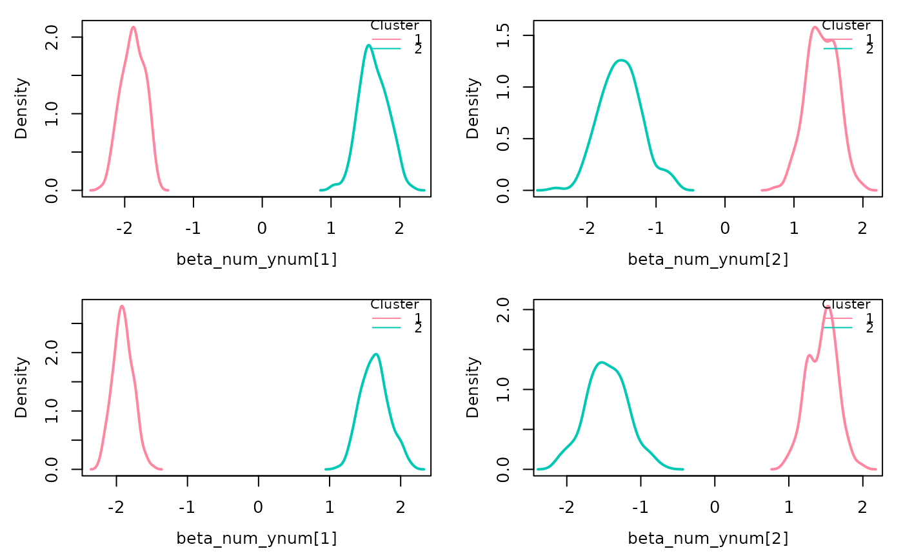
par(oldpar)
## confusion matrices with the true labeling
for(ch in 1:mcmc$nchains){
longitudinal_mixed_type_data[,paste0("clustering",ch)] <-
mcmc$clustering[longitudinal_mixed_type_data[,id],ch]
}
data1 <- longitudinal_mixed_type_data[longitudinal_mixed_type_data$j==1,]
table(data1$clustering1, data1$g)
#>
#> 1 2
#> 1 50 0
#> 2 1 49
table(data1$clustering2, data1$g)
#>
#> 1 2
#> 1 50 0
#> 2 1 49
### Example how to change the permutation so that results across chains align
### + align also with the true labelling within the given data
perm <- list()
perm[[1]] <- c(2, 1) # change if needed
perm[[2]] <- c(1, 2) # change if needed
# function to permute meaning of cluster labels in mcmc according to perm
mcmc1 <- permute_cluster_labels(mcmc, perm)
# If perm is not specified,
# Hungarian algorithm matches the labelling of other chains to chain number 1
mcmc2 <- permute_cluster_labels(mcmc)
#> Cannot coerce to mcmc.list because of different number of variables in each chain.
#> Only a list of mcmc objects is returned, apply summary(), etc. only per chain.
# which in this case is different from the true labelling in data
###-----------------------------------------------------------------------------
### Plotting post-processed chains
###-----------------------------------------------------------------------------
# Notice that now there are only modeGplus clusters and not original G
plot(mcmc1, "w", "traceplots", thin = 10)
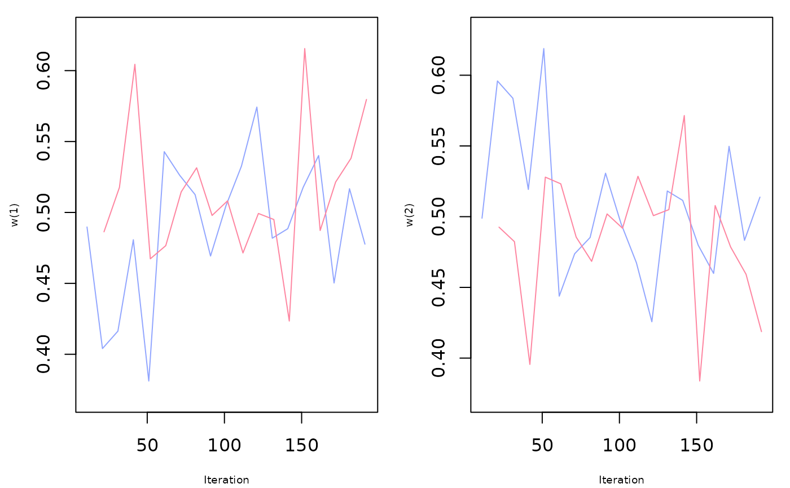
plot(mcmc1, "w", "kerneldensity")
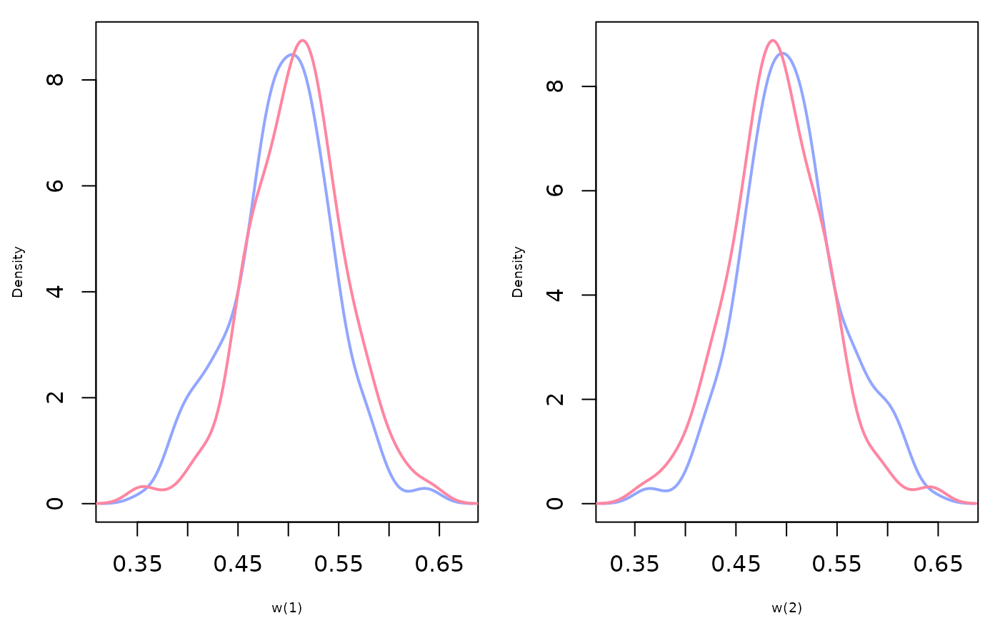
plot(mcmc1, "beta_num", "clusters_kerneldensity")

 plot(mcmc1, "beta_poi", "clusters_kerneldensity")
plot(mcmc1, "beta_poi", "clusters_kerneldensity")
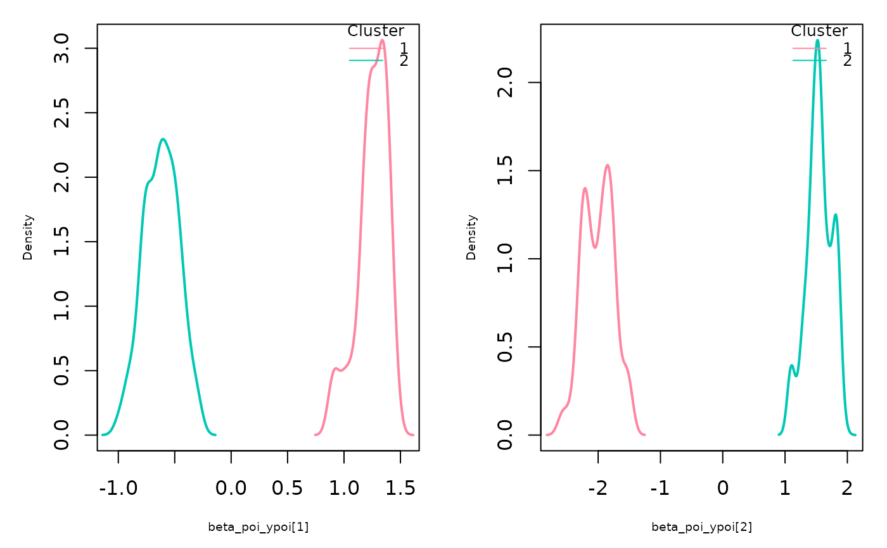
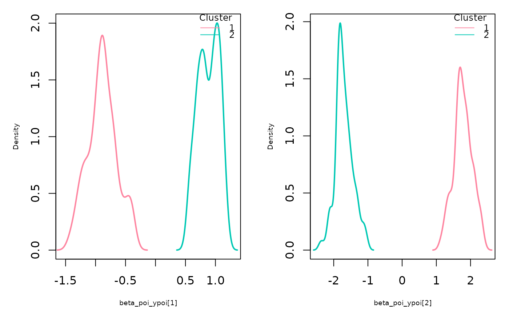
plot(mcmc1, "beta_bin", "clusters_kerneldensity")
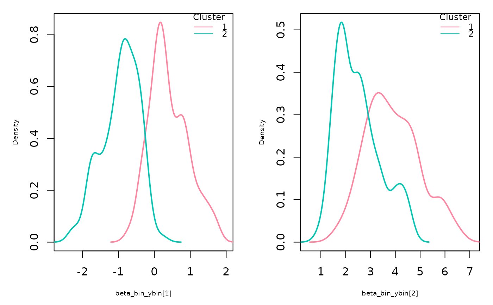
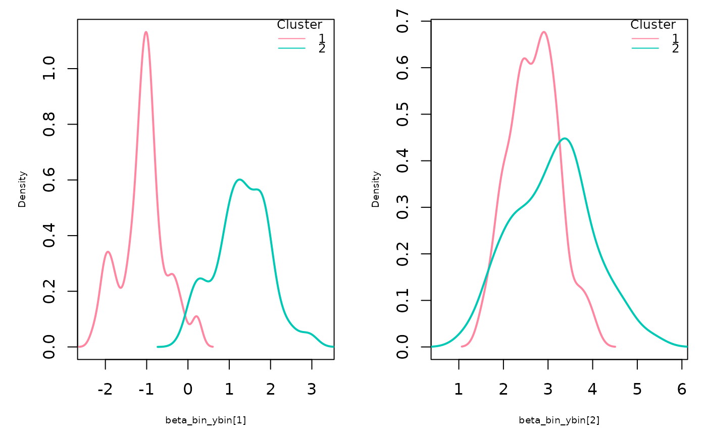
plot(mcmc1, "beta_ord", "clusters_kerneldensity")
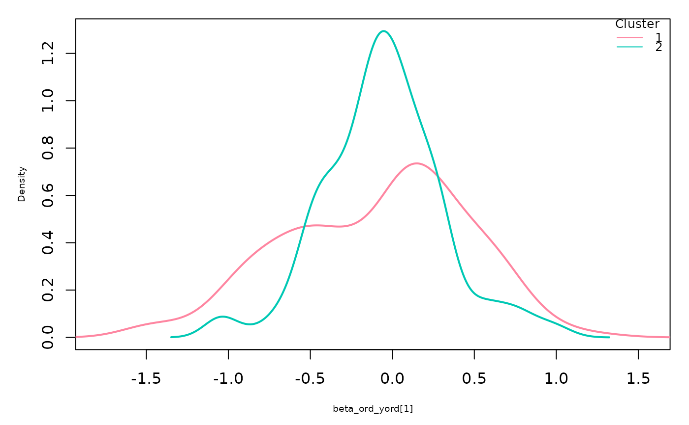
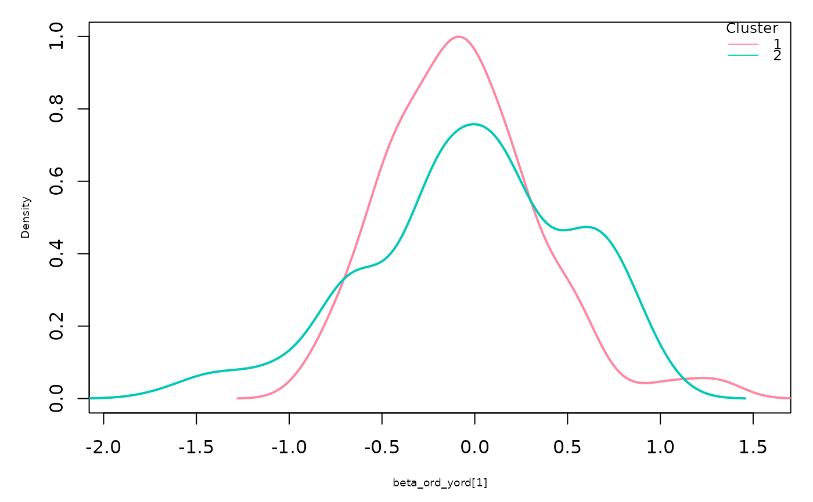
plot(mcmc1, "beta_cat", "clusters_kerneldensity")
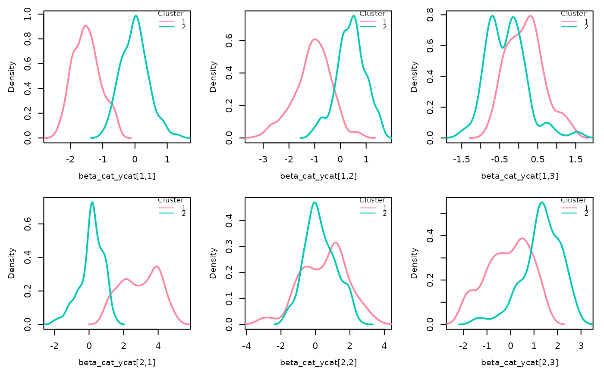
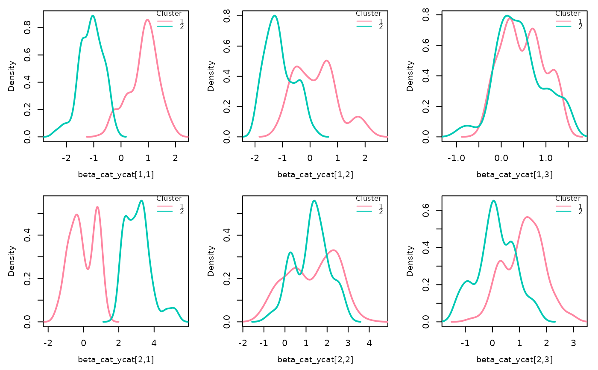
# Compare
plot(mcmc1, "beta_num", "clusters_kerneldensity")
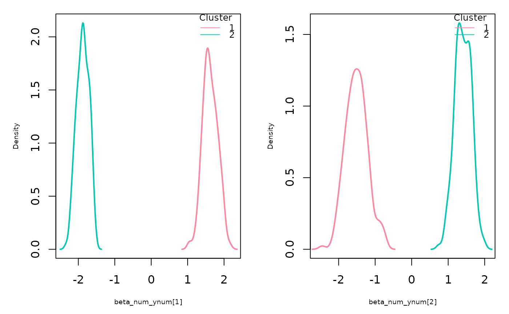
 plot(mcmc2, "beta_num", "clusters_kerneldensity")
plot(mcmc2, "beta_num", "clusters_kerneldensity")
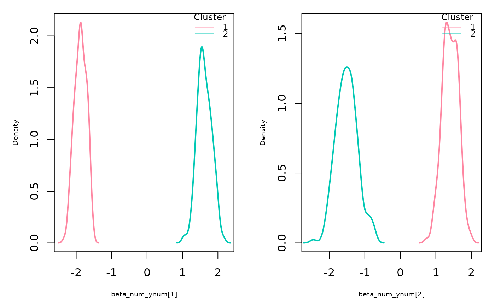
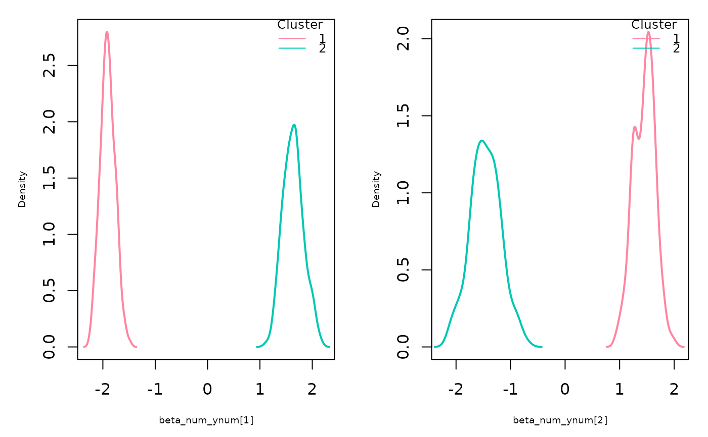
# }